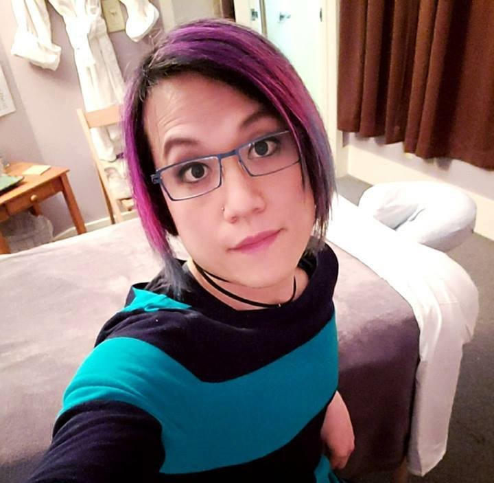

About

Brie Chang (she/her) is a mind-body therapist with a mission to
facilitate holistic wellness, especially for professional care providers
(e.g. therapists, social workers, physicians) as well as
Queer/Trans/People of Color communities. Brie sees her practice
as a form of activism – supporting the healing, resilience, and
sustainability of individuals and communities at the forefront of
historical oppression and trauma.
Working with Brie is characterized by a relational dynamic that
defies the rigidity of traditional client-provider interactions. Clients
have described working with Brie as calming, resonant, affirming,
and humorous. Brie’s approach to healing is based on trauma
informed practice, intersectional feminism, de-colonizing methodology, and evidence-based
interventions. Brie's practice seeks to stay grounded through her grassroots activism network as well
as her personal lived experiences as a transgender woman, disabled veteran, and second generation
Chinese American. In her spare time, Brie enjoys cooking, performing standup comedy, and cuddling
with her canine companion Milo.
Curriculum Vitae
Academic:
- University of Washington, Doctor of Philosophy in Nursing Science (Candidate)
- Bellevue Massage School, License in Massage Therapy (2018)
- University of Washington, Master in Social Work (2015)
- University of California in Irvine, Bachelor’s in Psychology (2006)
Professional:
- DreamClinic, Massage Therapist (March 2018-present)
- Catholic Community Services, On-Call Clinician/Case Manager (2015 - present)
- Freedom Project, Director of Community & Org. Development (2014-2017)
- Univ. of Washington, School of Social Work, Field Education Supervisor (2017)
- Univ. of Washington, School of Social Work, Teaching Assistant (2016)
- Social Development Research Group, Practicum Student (2014)
- Therapeutic Health Services, Practicum Student (2014)
- Atlantic Street Center, Practicum Student (2014)
- Catholic Community Services, Clinician/Case Manager (2013-2015)
- United States Army (2009-2013)
Research / Independent Studies:
- Univ. of Washington, School of Social Work (2013-2014)
- Univ. of Washington, College of Built Environments (2013)
- Univ. of California Irvine, Department of Neuropsychiatry (2008)
- Univ. of California Irvine, Department of Psychology & Social Behavior (2007-2008)
- Univ. of California Irvine, Department of Medicine (2005-2006)
- Univ. of California Irvine, Department of Humanities (2004)
- Univ. of California Irvine, Department of Psychiatry & Human Behavior (2003)
- Univ. of CA Irvine, Department of Neurobiology & Behavior (2002-2003)